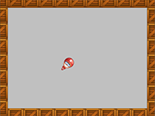

Tutorial
Page 11 of 15
Saving and Testing
You might not have realized it but our game is ready now. The sprites and sounds have been added, the game objects have been designed and the first (and only!) room in which the game takes place has been created. Now it
is time to save the game and to test it.
Saving the games works as in almost any other Windows program - just click the Save icon and GameMaker will save your project.
Next we need to test the game. Testing is a crucial component of creating a game, and although you can test it yourself, you should also ask others to test it. Testing (or running the game in general) is simple! Choose the
command Run Normally from the drop down Run menu in the main Gamemaker window, or press the green Play button. The game will be loaded and, if you did not make any mistakes,
the room will appear on the screen with the clown moving inside it.

Try testing it now and see whether the game behaves as expected. You should hear the correct sounds and the speed of the clown should increase every time you click on it. To end the game, close the browser window, or click on
the close button at the top right of the window.
Now it is time to fine tune the game. You should ask yourself for example the following questions: Is the initial speed correct? Is the increase in speed correct? Is the room size correct? Did we pick effective sprites and sounds for
the game? If you are not happy, change these aspects in the game and test again. Remember that you should also let somebody else test the game, because since you designed the game it might be easier for you than for other people.
Once you are happy with your game you should create a stand-alone executable for the game. This is a version of the game that can run without the need for Game Maker. This is very simple to do, but first you must choose a "target"
for your game from the drop-down menu at the top of t he GameMaker window. I suggest choosing "Windows" just now. In the File Menu choose the command Create Application. You have to indicate
the place and name of the installer, or a location for the index.html web page to be created. Once you have done this, you'll see the compile window showing you the progress and when it rreads "Finished!" you're all set! You could now
close GameMaker and install the game, or upload the web pages to your website for friends to play.
Click on the Next button to go to the next page of the tutorial.